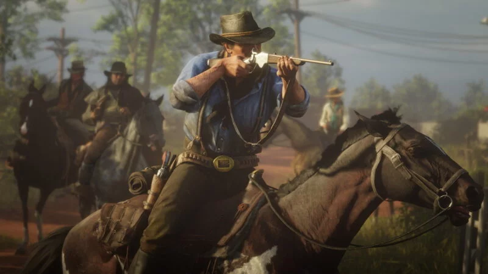

Red Dead Redemption 2: Menyelami Era Wild West
Dipublikasikan Pada 16 Oktober 2024
Menyajikan pengalaman mendalam dalam dunia Wild West yang mendebarkan.
Red Dead Redemption 2 adalah permainan aksi-penjelajahan yang dirilis pada tahun 2018, dikembangkan oleh Rockstar Games. Dalam permainan ini, pemain akan mengikuti perjalanan Arthur Morgan, seorang penjahat yang berjuang untuk bertahan hidup di tengah kekacauan yang melanda era Wild West.
Berlatar di Amerika Serikat pada tahun 1899, game ini mengeksplorasi kehidupan geng Van der Linde yang berusaha melarikan diri dari penegakan hukum dan menghadapi musuh-musuh lainnya. Pemain dapat menjelajahi dunia terbuka yang luas, melakukan berbagai misi, dan berinteraksi dengan karakter-karakter menarik di sepanjang perjalanan.
Dalam petualangan ini, pemain akan terlibat dalam aksi-aksi berbahaya, perampokan, dan pertempuran. Setiap keputusan yang diambil oleh Arthur akan memengaruhi hubungan dengan anggota geng dan reputasi di dunia game. Aspek moral dan pilihan yang sulit menjadi bagian penting dari cerita.
Setelah pengumuman yang dinantikan, Red Dead Redemption 2 dirilis pada 26 Oktober 2018 dan segera mendapatkan pujian kritis. Ulasan positif menggarisbawahi kedalaman cerita, karakter yang kompleks, serta grafis dan detail dunia yang mengagumkan. Game ini juga menjadi salah satu peluncuran terbesar dalam sejarah industri video game.
Rockstar Games mendukung permainan ini dengan pembaruan dan mode multipemain, Red Dead Online, yang memungkinkan pemain berinteraksi dengan orang lain dalam setting Wild West. Mode ini menambah pengalaman dengan misi dan konten tambahan yang terus berkembang.
Dalam Red Dead Redemption 2, pemain juga dapat merasakan elemen RPG yang mendalam, seperti sistem pertempuran yang lebih strategis dan penyesuaian karakter. Eksplorasi dunia yang kaya akan beragam lokasi, mulai dari hutan, kota kecil, hingga pegunungan, memberikan kebebasan bagi pemain untuk menjalani cerita sesuai dengan keinginan mereka.
Desain grafis dan detail yang menakjubkan memberikan pengalaman visual yang memukau, menciptakan nuansa yang realistis dari kehidupan di Wild West. Suara latar dan narasi yang mendalam menambah kedalaman emosional pada permainan, membuat pemain terhubung dengan karakter dan dunia yang ada.
Dengan pendekatan yang inovatif dan pengalaman yang mendalam, Red Dead Redemption 2 berhasil menciptakan kembali antusiasme para penggemar, membuktikan bahwa inovasi dalam gameplay dan cerita adalah kunci untuk mempertahankan relevansi di industri game.
Secara keseluruhan, Red Dead Redemption 2 bukan hanya sekadar permainan, tetapi juga sebuah perjalanan emosional melalui sejarah Wild West yang penuh tantangan. Dengan semua fitur menarik dan narasi yang kaya, tidak heran jika game ini mendapatkan tempat khusus di hati para pemain di seluruh dunia.
Sumber : Wikipedia